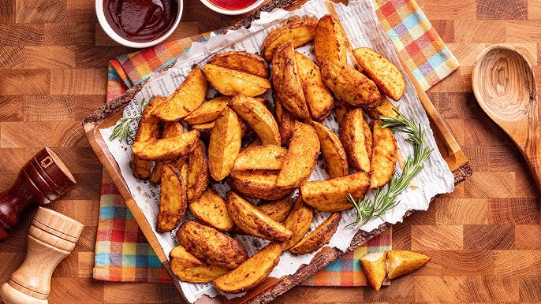

Feluri principale
Tăiței chinezești cu pui
Pui, tăiței, legume, sos de soia

Ingrediente:
• piept de pui
• tăiței chinezești
• varză dulce
• morcov
• ardei gras
• ciuperci urechi de lemn (opțional)
• sos de soia
• sos Maggi
• dulceață de ardei iute (opțional)
• ulei de măsline
• sare și piper
• ou (opțional, pentru omletă)
Mod de preparare:
Pieptul de pui se taie mărunt și se marinează cu sos de soia, puțină sare, piper, sos Maggi și dulceață de ardei iute, apoi se lasă aproximativ 30 de minute.
Se gătește apoi în tigaie cu puțin ulei de măsline până este bine făcut.
Tăițeii se opăresc și se trag ușor la tigaie cu puțin ulei de măsline și sos de soia.
Legumele se taie (varza fideluță, morcovul și ardeiul bastonașe) și se gătesc separat, fiecare în tigaie, cu puțin ulei și sare.
După ce toate sunt gătite ușor, se pun împreună în tigaie și se adaugă carnea.
Se mai adaugă puțin sos de soia și sos Maggi pentru un plus de gust și consistență.
La final se adaugă tăițeii și se amestecă aproximativ un minut pe foc.
Servire:
Se poate adăuga deasupra omletă tăiată mărunt și se servește cald.
Fajitas de pui
Pui, ardei, ceapă, condimente

Ingrediente:
• 500 g piept de pui
• 1 lingură boia dulce
• ½ lingură boia iute
• 1 lingură coriandru
• 2 căței de usturoi
• 4-5 linguri ulei de măsline
• 1 ceapă roșie
• 1 ardei kapia
• 1 ardei roșu iute (opțional)
• sare și piper
• porumb dulce (opțional)
• ceapă verde (opțional)
Mod de preparare:
Se pregătește un mix de condimente din boia dulce, boia iute, coriandru, usturoi zdrobit, ulei de măsline, sare și piper.
Pieptul de pui se taie fâșii subțiri și se amestecă bine cu mixul de condimente, apoi se lasă puțin să se odihnească.
Ceapa și ardeii se taie și se gătesc ușor într-o tigaie cu puțin ulei de măsline.
Se adaugă puiul peste legume și se gătește până își schimbă culoarea și devine fraged.
La final se pot adăuga porumbul și ceapa verde pentru extra gust și prospețime.
Servire:
Se servește cald, simplu sau în lipii tip wrap, alături de sosuri, salată sau garnitură.
Cartofi wedges
Fierți si la cuptor

Ingrediente:
• 4–5 cartofi mari
• 2–3 linguri ulei
• 1 linguriță boia dulce
• 1/2 linguriță usturoi granulat
• sare și piper
Mod de preparare:
Cartofii se taie wedges și se pun la fiert în apă cu sare.
Se fierb 7–10 minute (nu complet, doar cât să se înmoaie puțin).
Se scurg bine, apoi se pun într-un bol.
Se agită energic 10–15 secunde până se “zgârie” ușor pe exterior.
Gătire:
Se adaugă uleiul și condimentele și se amestecă.
La cuptor:
200°C timp de 35–40 minute, întorși la jumătate.
La air fryer:
180°C timp de 18–22 minute, agitați la jumătate.
Ies crocanți la exterior și pufoși în interior.